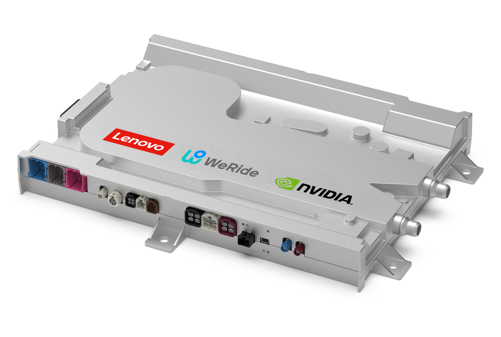

WeRideはLenovoと共同開発し、NVIDIAの最新DRIVE AGX Thorチップで動作するHPC 3.0高性能コンピューティングプラットフォームを発表した。HPC 3.0はWeRideの最新世代Robotaxi GXRに初搭載され、NVIDIA DRIVE AGX Thor上に構築された世界初の量産Level 4自動運転車と位置付けられている。
HPC 3.0は、安全認証済みDriveOSを実行するデュアルNVIDIA DRIVE AGX Thor構成を特徴とする。LenovoのAD1 L4自動運転ドメインコントローラ上に構築され、最大2,000 TOPSのAI計算性能を提供する。L4自律走行を支える最も強力な計算プラットフォームの1つである。
HPC 3.0は完全な車載グレードとして設計され、自動運転スイートのコストを50%削減する。これによりRobotaxi GXRの大規模商用展開に向けた道を開く。量産L4において、計算性能だけでなくコストと車載品質を同時に満たすことが重要である。
WeRideの発表は、L4 Robotaxiの車載計算基盤がNVIDIA DRIVE AGX Thorへ移行していることを示す具体例である。デュアルSoC、DriveOS、Lenovo製L4ドメインコントローラ、2,000 TOPSという構成は、量産L4プラットフォームの計算アーキテクチャを考えるうえで参照価値が高い。